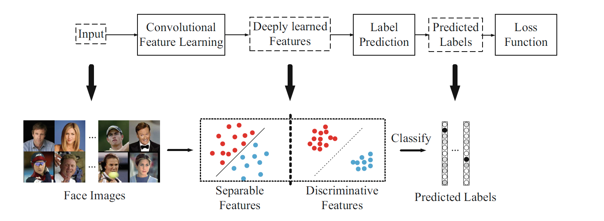
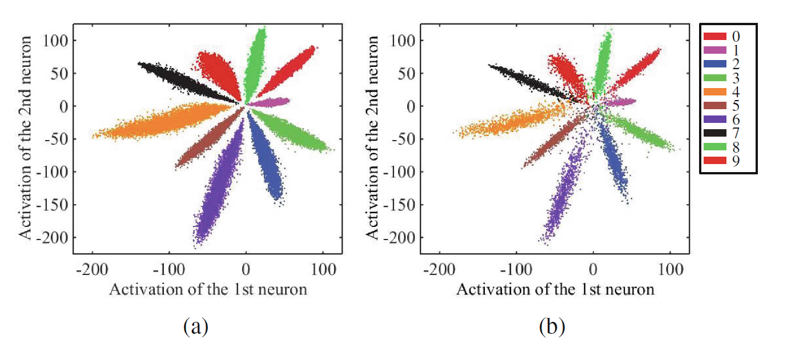
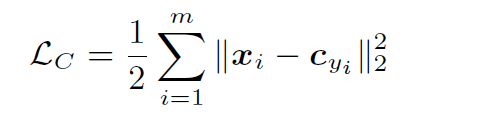
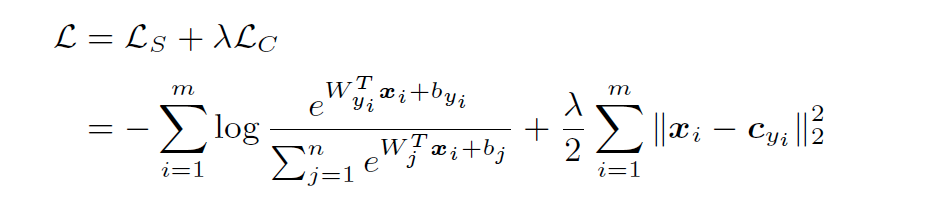
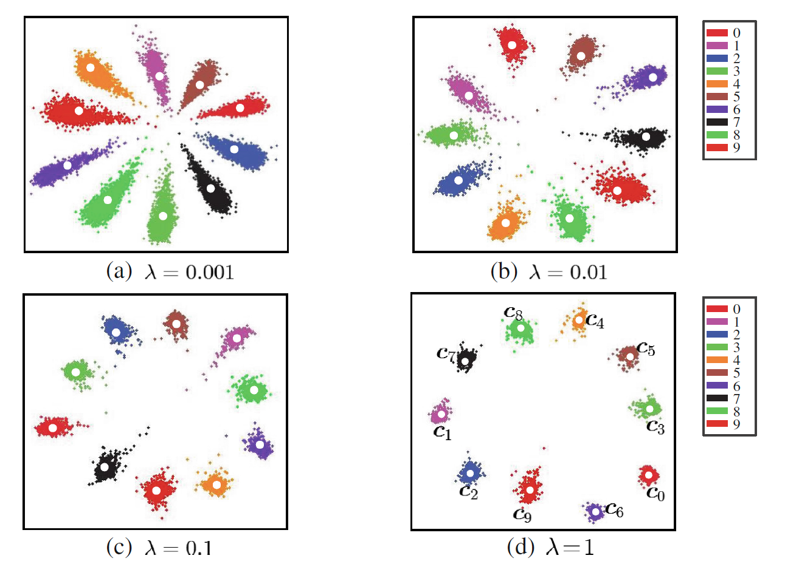
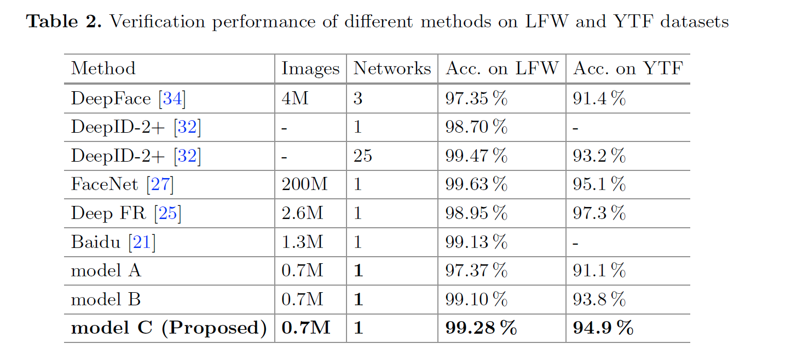

Center Loss - A Discriminative Feature Learning Approach for Deep Face Recognition
URL:http://ydwen.github.io/papers/WenECCV16.pdf
这篇论文主要的贡献就是提出了Center Loss的损失函数，利用Softmax Loss和Center Loss联合来监督训练，在扩大类间差异的同时缩小类内差异，提升模型的鲁棒性。

为了直观的说明softmax loss的影响，作者在对LeNet做了简单修改，把最后一个隐藏层输出维度改为2，然后将特征在二维平面可视化，下面两张图分别是MNIDST的train集和test集，可以发现类间差异比较明显，但是类内的差异也比较明显。

为了减小类内差异论文提出了Center Loss：

Cyi就是类的中心点特征，Cyi的计算方法就是yi类样本特征的均值，为了让center loss在神经网络训练过程中切实可行，Cyi的计算是对于每一个mini-batch而言，因此结合Softmax Loss，整个网络的损失函数就变成了， λ用来平衡这两个Loss：

用同样的网路结构只是将Softmax Loss替换成Center Loss作者在MNIST数据集上做了同样的实验，对于不同的λ值得到了如下可视化结果可以发现Center Loss还是比较明显的减小了类内差异同时类间差异也比较突出。

在公开数据集上的表现：

本博客所有文章除特别声明外，均采用 CC BY-NC-SA 4.0 许可协议。转载请注明来自 Out of Memory！